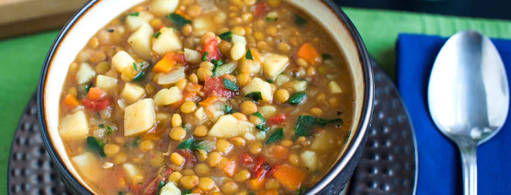

Plantfood
Toggle navigation
Home
Recipes
Add recipe
Log in / Sign up

Super Stove-Top Mac and Cheese
Ingredients:
2 small onions, finely chopped
2 carrots, finely chopped
6 small white potatoes, finely chopped
1 16-ounce bag brown lentils
1 15.5-ounce can fire roasted tomatoes, diced
8 cups vegetable broth or water
1-2 cups finely chopped spinach
salt and pepper to taste
Directions:
Combine all ingredients, except the spinach, and cook on low for 2 hours. Add the spinach about 5 minutes before the soup is done. Season to taste with salt and pepper.